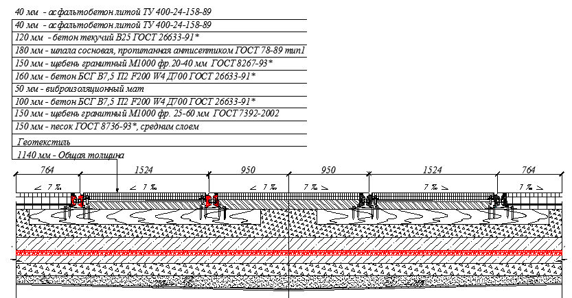
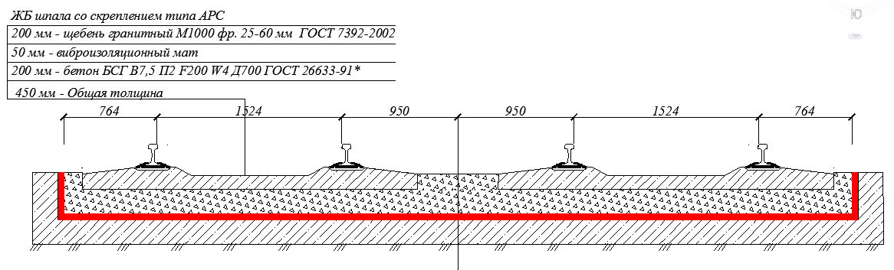
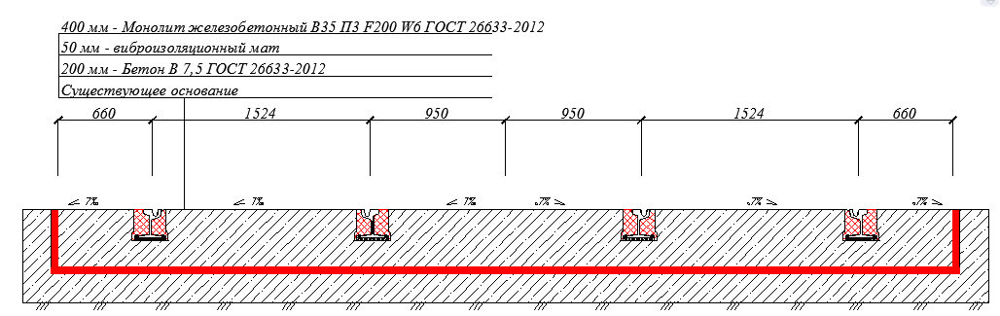
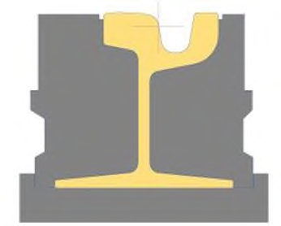

СП 84.13330.2016 «Трамвайные пути»
О документе: разработчики, утверждение, регистрация, ключевые слова
СВОД ПРАВИЛ
- 1 ИСПОЛНИТЕЛИ - ЗАО «ПРОМТРАНСНИИПРОЕКТ», ООО «НТЦ НИИ Горэлектротранспорта»
- 2 ВНЕСЕН Техническим комитетом по стандартизации ТК 465 «Строительство»
- 3 ПОДГОТОВЛЕН к утверждению Департаментом градостроительной деятельности и архитектуры Министерства строительства и жилищнокоммунального хозяйства Российской Федерации (Минстрой России)
- 4 УТВЕРЖДЕН приказом Министерства строительства и жилищнокоммунального хозяйства Российской Федерации от 16 декабря 2016 г. № 958/пр и введен в действие с 17 июня 2017 г.
- 5 ЗАРЕГИСТРИРОВАН Федеральным агентством по техническому регулированию и метрологии (Росстандарт). Пересмотр СП 84.13330.2011 «СНиП III-39-76 Трамвайные пути»
В случае пересмотра (замены) или отмены настоящего свода правил соответствующее уведомление будет опубликовано в установленном порядке. Соответствующая информация, уведомление и тексты размещаются также в информационной системе общего пользования - на официальном сайте разработчика (Минстрой России) в сети Интернет
© Минстрой России, 2016
Настоящий нормативный документ не может быть полностью или частично воспроизведен, тиражирован и распространен в качестве официального издания на территории Российской Федерации без разрешения Минстроя России
Дата введения - 2017-06-17
УДК ОКС 93.100
Ключевые слова: трамвайные пути, контактные сети, электроснабжение, электротяговые подстанции, депо, ремонтные мастерские, стоянки, строительство, реконструкция, модернизация
Введение
Настоящий свод правил разработан с учетом обязательных требований Федерального закона от 30 декабря 2009 г. № 384-ФЗ «Технический регламент о безопасности зданий и сооружений» [1], Федерального закона от 23 ноября 2009 г. № 261-ФЗ «Об энергосбережении и повышении энергетической эффективности и о внесении изменений в отдельные законодательные акты Российской Федерации» [2].
Актуализация свода правил выполнена авторским коллективом: ЗАО «ПРОМТРАНСНИИПРОЕКТ» ( В.А. Сидяков , Л.А. Андреева , И.П. Потапов ), ООО «НТЦ НИИ ГЭТ» ( О.В. Григорьева , А.И. Комаров , вед. О.А. Кропоткин ).
C В О Д П Р А В И Л
Tramways
1Область применения
Свод правил распространяется на вновь строящиеся и реконструируемые трамвайные пути (с шириной рельсовой колеи на прямых участках 1524 мм) обычные (городские), скоростные (обособленные), грузовые и служебные, а также располагаемые на территории депо и ремонтных мастерских (заводов).
Настоящий свод правил не распространяется на капитальный ремонт трамвайных путей (с шириной рельсовой колеи на прямых участках 1524 мм) обычных, скоростных, грузовых и служебных, а также располагаемых на территории депо и ремонтных мастерских (заводов).
2Нормативные ссылки
В настоящем своде правил приведены ссылки на следующие нормативные документы:
ГОСТ 9.602-2005 Единая система защиты от коррозии и старения. Сооружения подземные. Общие требования к защите от коррозии
ГОСТ 12.3.003-86 Система стандартов безопасности труда. Работы электросварочные. Требования безопасности
ГОСТ 9238-2013 Габариты железнодорожного подвижного состава и приближения строений
ГОСТ 21174-75 Шпалы железобетонные предварительно напряженные для трамвайных путей широкой колеи
ГОСТ 23407-78 Ограждения инвентарные строительных площадок и участков производства строительно-монтажных работ. Технические условия
ГОСТ 33320-2015 Шпалы железобетонные для железных дорог. Общие технические условия
СП 35.13330.2011 «СНиП 2.05.03-84* Мосты и трубы»
СП 45.13330.2012 «СНиП 3.02.01-87 Земляные сооружения, основания и фундаменты»
СП 70.13330.2012 «СНиП 3.03.01-87 Несущие и ограждающие конструкции» СП 98.13330.2012 «СНиП 2.05.09-90 Трамвайные и троллейбусные линии»
СП 122.13330.2012 «СНиП 32-04-97 Тоннели железнодорожные и автодорожные»
Примечание - При пользовании настоящим сводом правил целесообразно проверить действие ссылочных документов в информационной системе общего пользования - на официальном сайте федерального органа исполнительной власти в сфере стандартизации в сети Интернет или по ежегодному информационному указателю «Национальные стандарты», который опубликован по состоянию на 1 января текущего года, и по выпускам ежемесячного информационного указателя «Национальные стандарты» за текущий год. Если заменен ссылочный документ, на который дана недатированная ссылка, то рекомендуется использовать действующую версию этого документа с учетом всех внесенных в данную версию изменений. Если заменен ссылочный документ, на который дана датированная ссылка, то рекомендуется использовать версию этого документа с указанным выше годом утверждения (принятия). Если после утверждения настоящего свода правил в ссылочный документ, на который дана датированная ссылка, внесено изменение, затрагивающее положение, на которое дана ссылка, то это положение рекомендуется применять без учета данного изменения. Если ссылочный документ отменен без замены, то положение, в котором дана ссылка на него, рекомендуется применять в части, не затрагивающей эту ссылку. Сведения о действии сводов правил целесообразно проверить в Федеральном информационном фонде стандартов.
3Термины и определения
В настоящем своде правил применены следующие термины с соответствующими определениями:
- 3.1балластный слой
- Дренирующий сыпучий материал, укладываемый на основную площадку земляного полотна и предназначенный для обеспечения устойчивости рельсошпальной решетки в пространстве под действием сил, действующих на нее, с минимальным накоплением остаточных деформаций, для передачи давления от подрельсового основания на основную площадку земляного полотна и упругой переработки ударов колес трамвайного вагона.
- 3.2верхнее строение трамвайного пути
- Рельсы, контррельсы, стыковые и промежуточные скрепления, противоугоны, путевые и междупутные тяги, температурные компенсаторы (уравнительные приборы), подрельсовые основания - шпалы, брусья, рамы, лежни, балласт, а также спецчасти - стрелочные переводы и глухие пересечения; кроме того, на совмещенном и обособленном полотнах - дорожное покрытие пути, а на мостах, путепроводах, эстакадах и насыпях - охранные рельсы и брусья.
- 3.3защитные сооружения трамвайного пути
- Постоянные или временные, поверхностные или заглубленные сооружения и устройства, предназначенные для защиты от неблагоприятных природных воздействий материалов или конструкций строений, входящих в комплекс трамвайного пути. 3.4 земляное полотно: (здесь): Сооружение, служащее основанием верхнего строения трамвайного пути, которое воспринимает нагрузку от верхнего строения пути и трамвайного вагона, равномерно распределяет ее на нижележащий естественный грунт, выравнивает неровности земной поверхности и защищает верхнее строение пути от расстройств, вызываемых изменениями природно-климатической среды. 3.5 контактная подвеска: Система подвешивания контактного провода (проводов) к поддерживающим устройствам. 3.6 контактная сеть: Совокупность устройств (опорные устройства, поддерживающие устройства, контактные подвески, специальные части, арматура), служащих для подведения электроэнергии непосредственно к токоприемнику подвижного состава. 3.7 контррельс: Устройство на железной дороге для предотвращения схода поездов с рельсов, а также для корректировки направления движения колесной пары при прохождении стрелочного перевода. Представляет собой дополнительный рельс, установленный внутри колеи рядом с основным рельсом, который входит в соприкосновение с колесом в случае его отклонения от траектории и удерживает его в заданном пространстве. 3.8 нагорная канава: Канава, служащая для перехватывания и отвода поверхностных вод, притекающих к полотну дороги, если дорога расположена на косогоре; они особенно необходимы для защиты от размыва откосов выемок. Нагорные канавы также устраивают для защиты траншей трубопровода от размыва. Выходы нагорных канав к искусственным сооружениям должны быть отведены от полотна дороги (трубопровода) возможно дальше, укреплены и расширены для предупреждения их размыва. 3.9 опоры (стойки): Специальные, отдельно стоящие конструкции для закрепления поддерживающих устройств контактной сети, питающих и усиливающих линий, сетей другого назначения. 3.10 опорные устройства: Устройства (конструкции), к которым закрепляются поддерживающие устройства контактной сети, питающих и усиливающих линий. 3.11 обочина земляного полотна: Часть основной площадки, располагающаяся между подошвой балластного слоя и бровкой земляного полотна. Верх земляного полотна, включающий в себя границу раздела балластного слоя нормируемой толщины
- 3.12основная площадка земляного полотна
- и грунтов земляного полотна, а также обочины.
- 3.13питающие линии
- Воздушные провода или кабельные линии, электрически соединяющие шины тяговых подстанций с контактными проводами и рельсами.
- 3.14поддерживающие устройства
- Гибкие или жесткие конструкции (тросовые и проволочные поперечины, кронштейны), к которым подвешиваются контактные подвески, спецчасти и другие элементы контактной сети.
- 3.15прави ́ ло
- Инструмент, предназначенный для проверки отсутствия вмятин или выпуклостей на различных видах плоскости.
- 3.16перегон
- Часть трамвайного пути, ограниченная смежными трамвайными остановками, разъездами, обгонными пунктами.
- 3.17подрельсовое основание
- Опоры для рельсов трамвайного пути, предназначенные для восприятия нагрузок от рельсов и передачи их на балластный слой или земляное полотно.
- 3.18приемка
- (здесь): Форма оценки соответствия объекта инфраструктуры наземного рельсового электротранспорта, строительство которого закончено, требованиям проекта и свода правил.
- 3.19реконструкция (модернизация) трамвайного пути
- В комплексе с реконструкцией проезжей части улиц, ливневой канализацией и другими обустройствами или самостоятельно: полная замена верхнего строения пути; повышение мощности рельсового пути; улучшение плана и профиля трассы; перекладка спецчастей; приведение котлована до установленных размеров.
- 3.20рельс
- Элемент конструкции верхнего строения пути, непосредственно воспринимающий нагрузку от колес трамвайного вагона и передающий ее на подрельсовое основание.
- 3.21рельсовые скрепления
- Элементы верхнего строения пути, предназначенные для соединения рельсов друг с другом и с подрельсовым основанием и предотвращающие перемещение рельса в горизонтальных поперечном и продольном направлениях.
- 3.22рельсошпальная решетка
- Рельсы и шпалы, соединенные между собой с помощью промежуточных скреплений.
- 3.23скрытые работы
- Работы, которые предъявляются строительной организацией к осмотру и приемке до их закрытия последующими работами; при этом акты на скрытые работы включаются в состав общей приемосдаточной документации.
- 3.24стрелочный перевод
- Устройство, служащее для соединения трамвайных путей друг с другом или ответвления путей и состоящее из стрелок, крестовин и соединительных путей между ними.
- 3.25строительство
- (здесь): Создание новых объектов инфраструктуры наземного рельсового электротранспорта.
- 3.26трамвайный путь
- Подсистема инфраструктуры наземного рельсового электротранспорта, включающая в себя верхнее строение пути, земляное полотно, водоотводные, водопропускные, противодеформационые, защитные и укрепительные сооружения земляного полотна, расположенные в полосе отвода, а также искусственные сооружения.
- 3.27фиксатор
- Фиксирующее устройство, предназначенное для фиксации положения контактного провода в плане, воспринимающее усилие от излома контактного провода в горизонтальной плоскости.
- 3.28фиксирующая поперечина
- Составная часть цепной гибкой поперечины, выполненная из троса или проволоки, воспринимающая горизонтальные нагрузки от фиксации положения контактного провода.
- 3.29цепная гибкая поперечина
- Гибкое поддерживающее устройство, состоящее из несущей и фиксирующей поперечины.
- 3.30цепная контактная подвеска
- Контактная подвеска, в которой контактный провод подвешен к продольному несущему тросу, закрепленному к поддерживающему устройству.
- 3.31ширина сближения
- Расстояние между проекциями на горизонтальную плоскость влияющего провода и подверженного влиянию провода в зоне влияния.
4Общие положения
- знаки, определяющие в плане вдоль оси трамвайных путей вершины углов поворота и главные точки круговых и переходных кривых, а также створные точки на прямых участках пути не реже чем через 1 км для загородных путей и 500 м - для городских путей;
- реперы, расположенные вдоль трассы путей не реже чем через 1 км для загородных путей и 500 м - для городских путей.
- разбивка и закрепление на местности пикетов, отметок, плюсовых точек и промежуточных точек кривых;
- установка, при необходимости, дополнительных реперов;
- разбивка водоотводных сооружений;
- разбивка центров стрелочных переводов.
Требования к проведению работ в зоне прокладки газовых сетей приведены в [7].
5Земляное полотно и водоотводные устройства
При обнаружении в процессе производства работ подземных коммуникаций в местах, не указанных в проекте, земляные работы должны быть приостановлены и на место работ вызваны представители организаций, эксплуатирующих подземные коммуникации.
Инженерные сети, проходящие ниже проектной отметки дна котлована, должны быть обследованы и при необходимости отремонтированы, о чем должен быть представлен акт соответствующими эксплуатационными службами. Траншеи подземных коммуникаций в пределах земляного полотна следует засыпать грунтом, используемым для сооружения полотна, с послойным уплотнением до плотности грунта земляного полотна.
Кроме того, должны быть выполнены следующие работы: обозначены границы разработки котлована, вынесены и закреплены оси котлована и в случае необходимости установлены дополнительные реперы, а также произведен перенос всех инженерных сетей, проходящих в границах разрабатываемого котлована.
На кривых участках двухпутных линий ширину котлована следует увеличивать на величину уширения междупутья.
По окончании профилировки грунтового основания плотность грунта должна составлять не менее Купл = 0,98 от максимальной плотности, определенной по методу стандартного уплотнения; при недостаточной плотности необходимо провести уплотнение основания при помощи гладковальцовых виброкатков. При необходимости стенки котлована должны быть усилены для предотвращения их обсыпки путем устройства упоров из деревянных конструкций или монтажа железобетонных уголков с высотой полки, равной глубине котлована.
СП 84.13330.2016 чтобы верхняя точка трубы не возвышалась над прилегающим к ней подстилающим слоем песка, вывод дренажных труб проводят в водосборные колодцы. 5.9 До начала отрывки траншеи под продольный путевой дренаж должны быть выполнены следующие работы:
- отпрофилирован и уплотнен грунт основания;
- проведены плановая и высотная геодезические разбивки дренажа с устройством обноски, нагорной канавы, обозначены границы разработки траншеи, вынесены и закреплены оси дренажа, при необходимости -установлены дополнительные реперы;
- рабочие и инженерно-технические работники (ИТР) ознакомлены с технологией и организацией работ и обучены безопасным методам производства земляных работ в стесненных условиях в траншеях.
Щебень и песок как фильтрующие материалы перед укладкой должны быть проверены на соответствие сертификационным показателям, загрязненность щебня не допускается.
При приемке законченных работ по профилировке и уплотнению грунтового основания проверке подлежат: соответствие геометрических размеров корыта проектным, как в плане, так и в профиле; соответствие проекту отметок дна грунтового основания. Отклонение размеров котлована от проектных не должны превышать допусков, указанных в СП 45.13330.
5.20Контроль качества устройства монолитной железобетонной плиты
При бетонировании плиты необходимо контролировать: правильность установки опалубки; качество изготовленных арматурных каркасов и точность их установки в проектное положение; правила выгрузки и распределения бетонной смеси; режим уплотнения бетонной смеси; порядок бетонирования; своевременность и правильность отбора проб для изготовления контрольных образцов бетона.
5.21Контроль качества монтажа путевой конструкции
При монтаже путевой конструкции необходимо контролировать: правильность разбивки осей трамвайных путей; раскладку в плане опорных блоков; точность установки ширины колеи; сварку стыков; установку резиновых элементов; крепление рельсов к железобетонной плите; точность установки пути в проектное положение.
6Верхнее строение пути; балластировочные работы
Температурно-напряженную систему бесстыкового пути следует применять при железобетонных шпалах и щебеночном основании.
На обычных линиях с дорожным покрытием рельсы надлежит сваривать в плети. Длина рельсовой плети не лимитируется и может быть ограничена только наличием несварного узла, деформационного шва на искусственных сооружениях и т.п.
На участках без дорожного покрытия, если конструкция пути не удовлетворяет требованиям бесстыкового пути, следует укладывать длинные рельсы. Плети разделяются температурными компенсаторами (уравнительными приборами). Длины плетей и типы уравнительных приборов определяются проектом.
Границы рельсовых плетей, укладываемых на мостах, путепроводах и эстакадах и монолитном основании, следует назначать с учетом расположения деформационных швов основания.
В конструкциях трамвайных путей допускается применять рельсы как обычного, так и желобчатого профиля (трамвайный профиль). Используемые скрепления должны соответствовать марке укладываемых рельсов.
При использовании рельсов обычного профиля в конструкции пути с покрытием до уровня головки необходимо предусматривать наличие прирельсового желоба для пропуска реборды колеса подвижного состава.
Рекомендуемые к использованию типы рельсов для различных условий эксплуатации приведены в таблице 1.
Таблица 1
| Участок пути | Тип рельсов | Тип рельсов | Тип рельсов | Тип рельсов |
|---|---|---|---|---|
| Участок пути | обычные линии трамвая | обычные линии трамвая | скоростные линии трамвая | депо, парки, ремонтные заводы |
| Участок пути | на совмещенном полотне (с дорожным покрытием) | на обособленном полотне (без дорожного покрытия) | скоростные линии трамвая | депо, парки, ремонтные заводы |
| Прямой и кривой радиусом более 400 м | Тв60, Т58 (Ri60, Ri62) | Р65, Р50 (Ri60) | Р65, Р50 (Ri60) | Новые или не новые Тв60, Т58, Р65, Р50, Р43 |
| Кривой радиусом от 200 до 400 м при продольном уклоне: менее20‰ | Тв60, Т58 (Ri60, Ri62) | Р65, Р50 (Ri60) | Тв60, Т58, а также при деревянных шпалах Р65 или Р50 с контррельсами Р50 или Р43 по обеим ниткам (Ri60, Ri62) | То же |
СП 84.13330.2016
| более20‰ | Тв65, Т62 (Ri60, Ri62) | Тв65, Т62, а также при деревянных шпалах Р65, Р50 с контррельсами Р43 по внутренней нитке (Ri60, Ri62) | Тв60, Т58, а также при деревянных шпалах Р65 или Р50 с контррельсами Р50 или Р43 по обеим ниткам (Ri60, Ri62) | Новые или не новые Тв60, Т58, Р65, Р50, Р43 |
|---|---|---|---|---|
| Кривой радиусом от 75 до 200 м при продольном уклоне: менее20‰ более20‰ | Тв65, Т62 (Ri60, Ri62) Тв65, Т62 (Ri60, Ri62) | То же То же, по обеим ниткам | - - | » » |
| Кривой радиусом менее 75 м | Тв65, Т62 (Ri60, Ri62) | То же | - | » |
| На мостах, путепроводах, эстакадах и насыпях высотой более 2 м, в стрелочных переводах и глухих пересечениях | Тв65, Т62 (Ri60, Ri62) | » | Тв65, Т62, а также при деревянных шпалах Р65 или Р50 с контррельсами Р50 или Р43 по обеим ниткам (Ri60, Ri62) | Новые или не новые Тв65 или Ri62, а также при деревянных шпалах Р50 с контррельсами Р43 по обеим ниткам или Ri60 |
| Примечание - На территориях депо и парков разрешается применять не новые рельсы, если они имеют износ, не превышающий 50 %нормы, установленной Правилами технической эксплуатации трамвая. | Примечание - На территориях депо и парков разрешается применять не новые рельсы, если они имеют износ, не превышающий 50 %нормы, установленной Правилами технической эксплуатации трамвая. | Примечание - На территориях депо и парков разрешается применять не новые рельсы, если они имеют износ, не превышающий 50 %нормы, установленной Правилами технической эксплуатации трамвая. | Примечание - На территориях депо и парков разрешается применять не новые рельсы, если они имеют износ, не превышающий 50 %нормы, установленной Правилами технической эксплуатации трамвая. | Примечание - На территориях депо и парков разрешается применять не новые рельсы, если они имеют износ, не превышающий 50 %нормы, установленной Правилами технической эксплуатации трамвая. |
При устройстве трамвайных путей выполнение заложенных в проект мероприятий по защите от электрического воздействия, шума и вибрации является обязательным.
- на прямых и кривых участках радиусом более 200 м - через 2,6-2,4 м;
- на кривых участках радиусом от 75 до 200 м - через 2,4-2,0 м;
- на кривых участках радиусом менее 75 м - через 1,8-1,3 м.
При покрытии пути сборными железобетонными плитами допускается изменять расстояние между тягами, которое должно быть кратным размеру плит.
На путях с железобетонными шпалами и безбалластных конструкциях установка тяг не требуется.
Число противоугонов определяют в проекте расчетом или принимают по типовым схемам.
Для путей, укладываемых на железобетонных шпалах и монолитном безбалластном основании, противоугоны не предусматриваются.
- на кривых участках пути (независимо от величины радиуса) на спуске с уклоном более 50 ‰;
- на кривых участках пути радиусом менее 200 м.
Охранный рельс необходимо располагать на расстоянии 215 мм в свету от края крайнего ходового рельса.
Головку охранного рельса следует устанавливать с допуском ±15 мм относительно головки ходового рельса.
Допускается предусматривать под балластным слоем сборные железобетонные конструкции или монолитные бетонные основания (полужесткие основания).
Безбалластные монолитные (жесткие) бетонные подрельсовые основания допускается предусматривать на мостах, эстакадах и путепроводах, в тоннелях, а также при строительстве (реконструкции) трамвайных путей на прямых и криволинейных участках пути, а также на границах стрелочных переводов и глухих пересечений.
При расположении трамвайных путей на продольных уклонах более 60 ‰ при щебеночном балласте и более 40 ‰ при гравийном и песчаном балластах применение в основаниях пути сборных железобетонных и бетонных монолитных конструкций не допускается. Конструкцию основания принимют на стадии проекта и обосновывают технико-экономическими расчетами.
- плитное железобетонное основание - рекомендуется при устройстве бесшпальной конструкции на перекрестках, где необходимо завершение строительных работ в кратчайшие сроки;
- монолитное бетонное основание - рекомендуется во всех остальных случаях.
6.7Устройство монолитной железобетонной плиты и монтаж рельсового пути
До начала работ необходимо: проверить наличие документального оформления сдачи приемки всех слоев искусственного основания и путевого дренажа; подготовить к работе и проверить приспособления и инструмент; доставить на объект и складировать необходимую арматуру, обрезиненные рельсы, опоры, стяжки, дополнительные резиновые вкладыши; выполнить вынесение и закрепление оси пути; ознакомить рабочих и ИТР с технологией и организацией работ и обучить безопасным методам труда.
6.8Изготовление и укладка арматурных каркасов
Размеры и конфигурация арматурных каркасов определяются проектом. Арматурные каркасы вручную укладывают в проектное положение на слой тощего бетона. Под каркасы устанавливают упоры для обеспечения нижнего защитного слоя бетона.
Правила сборки арматурных каркасов и отклонения должны соответствовать требованиям СП 70.13330.
Составляют акт освидетельствования скрытых работ.
6.9Установка опалубки
Если ППР предусмотрена укладка бетона вручную, то боковую опалубку устанавливают по периметру плиты. Верх опалубки должен быть выставлен точно в проектное положение верха железобетонной плиты. В бетонных покрытиях устраивают деформационные швы различного назначения. Места расположения швов и их типы устанавливаются проектом.
Штыри должны располагаться строго перпендикулярно к вертикальному сечению плиты.
При бетонировании особое внимание следует уделять уплотнению бетона у деформационных швов и в местах примыкания к опалубке.
В случае нарезки деформационных швов нарезчиками с алмазными дисками прочность бетона покрытия должна быть не менее 100 кгс/см² .
Таблица 2
| № п.п. | Модуль упругости подплитного основания Е , МПа | Коэффициент постели подплитного основания C 1 , МПа/м | Осевая нагрузка Р ос , кН/ось | Изгибающий момент М max , кН·м/м | Изгибающие напряжения σ max , МПа | Нормативная прочность фибробетона с полимерной фиброй на растяжение при изгибе σ ри,ф , МПа |
|---|---|---|---|---|---|---|
| 1 | 8 | 0,35 | 78,5 | 23,9 | 3,59 | 9,25 |
| 1 | 8 | 0,35 | 98,1 | 29,8 | 4,47 | 11,53 |
| 2 | 12 | 3,95 | 78,5 | 11,7 | 1,76 | 4,53 |
| 2 | 12 | 3,95 | 98,1 | 14,7 | 2,21 | 5,69 |
| 3 | 250 | 110,0 | 78,5 | 5,08 | 0,76 | 1,97 |
| 3 | 250 | 110,0 | 98,1 | 6,35 | 0,95 | 2,46 |
Примечание - При слабых основаниях с модулем упругости 8 МПа рекомендуется устройство монолитной железобетонной плиты с двумя слоями армирования, на основаниях с модулем упругости 12 МПа рекомендуется устройство железобетонной плиты с одним слоем армирования, на прочных основаниях с модулем упругости 250 МПа рекомендуется устройство трамвайного пути на монолитном основании из фибробетона.
Предусмотренный проектом поперечный уклон бетонной плиты следует обеспечивать путем придания указанного уклона земляному полотну, устройства опалубки равной высоты по всему ее периметру и равномерного распределения (заполнения) бетонной смеси по всей площади опалубки, соблюдая проектный уклон.
- СП 84.13330.2016 при бетонировании следует устранять до затвердения бетонной смеси. После разборки опалубки пустоты между бетоном и стенками земляного полотна (корыта) следует заполнять местным грунтом и тщательно трамбовать. 6.16 Бетонирование участков плиты между температурными швами следует проводить без перерыва. В случае перерыва бетонирования плиты на время, большее, чем допускает начало твердения бетона, необходимо обеспечивать надлежащую ее связь с последующим участком плиты. 6.17 Прокладки в местах швов расширения в бетонной плите следует устанавливать отвесно, перпендикулярно к оси пути и закреплять в основании пути колышками. Штыри в швах расширения должны размещаться параллельно оси пути (в плане и по вертикали) на высоте, равной половине толщины плиты. 6.18 Отделку поверхности плиты выполняют под прави ́ ло. Для выдерживания проектной толщины плиты применяют съемные маячные рейки или арматурные стержни, верх которых должен соответствовать уровню поверхности бетона. 6.19 Движение людей по забетонированной плите допускается после достижения бетоном прочности не менее 1,5 МПа. 6.20 Рабочее движение вагонов по путям, уложенным на монолитную бетонную плиту; разрешается открывать по достижении ею не менее 70 % проектной прочности. 6.21 Монтаж рельсового пути допускается проводить на опорные блоки, на путевых порталах или другими предусмотренными проектом способами. 6.22 Трамвайные железобетонные шпалы (ГОСТ 21174) надлежит применять в путях без дорожного покрытия с рельсами типов Тв60, Тв65, Р65, Р50, Р43 на щебеночном основании на прямых и кривых участках пути радиусом 20 м и более. Допускается применять железнодорожные железобетонные шпалы (ГОСТ 33320) в трамвайных путях без дорожного покрытия с рельсами типов Р65 и Р50 на щебеночном основании на прямых участках и кривых радиусом более 400 м, а также на кривых участках пути радиусом от 200 до 400 м при продольном уклоне менее 20 ‰. В путях, укладываемых на железобетонных шпалах или иных железобетонных конструкциях, следует предусматривать упругие прокладки (нормальной или повышенной эластичности) и упругие элементы прижатия рельса. В безбалластных конструкциях необходимо применение прирельсовых вкладышей для уменьшения шума и вибрации. 6.23 Число шпал на 1 км пути и число переводных брусьев (шпал) в пределах стрелочных переводов и пересечений определяется проектом. из
Допускается применять щебень из естественного камня для строительных работ, щебень из металлургических шлаков, а также других местных материалов, соответствующих требованиям государственных стандартов на балласт.
Движение транспортных средств по земляному полотну при неустойчивом состоянии грунта не допускается.
Признаками достижения необходимого уплотнения на первом этапе служит прекращение образования волны перед катком и отсутствие заметной на глаз осадки щебня, а на втором этапе - отсутствие подвижности щебня и следа от прохода катка.
При уплотнении гравийную смесь с недостаточной ее влажностью следует поливать водой из расчета 6-12 л/м² уплотняемой поверхности. Верхний подбивочный слой должен быть из щебня фракций 10-40 мм.
Шлаковый щебень перед распределением его по земляному полотну следует поливать водой из расчета 25-35 л/м² неуплотненного щебня и в процессе уплотнения тяжелыми катками поливать водой малыми дозами из расчета 50-60 л/м² неуплотненного щебня.
После уплотнения шлакового слоя его необходимо через один-два дня поливать водой в течение 10-12 дней из расчета 2-2,5 л/м² в день.
- земляное полотно должно быть очищено от снега и льда;
- балласт: песчаный, гравелистый и ракушечный должны быть сухими (с влажностью не более 6 %);
- величина участка работ должна назначаться так, чтобы в течение рабочей смены на нем полностью заканчивалась балластировка пути;
- балластный слой следует уплотнять без увлажнения и непосредственно после отсыпки слоя.
Звенья и блоки перед отправкой к месту укладки должны проходить проверку качества их сборки.
При разгрузке рельсы следует предохранять от повреждения. Сбрасывание рельсов при разгрузке не допускается.
Концы шпал следует выравнивать по шнуру на однопутных линиях справа по ходу пикетажа, а на двухпутных - справа по ходу движения трамвая.
Отверстия для тяг следует сверлить на высоте 60-70 мм от подошвы рельса. Прожигание отверстий в рельсах запрещается.
- Переход на кривых участках пути к уширенной колее следует проводить путем смещения внутреннего рельса на всем протяжении переходной кривой. 6.50 Противоугоны следует устанавливать так, чтобы они прилегали к боковой поверхности шпал, а зуб каждого противоугона (на правой и левой рельсовых нитях) располагался снаружи колеи. 6.51 Крепление контррельсов к рабочему рельсу следует проводить болтами и тягами поочередно. Стыки контррельсов должны быть сборными. Болты в стыках следует устанавливать гайками внутрь колеи. Контррельсы следует прикреплять к шпалам с внутренней стороны колеи, а рабочие рельсы - с наружной стороны. 6.52 После подъемки пути, подбивки шпал и рихтовки пути следует проводить обкатку трамвайных путей поездной нагрузкой не менее 20 тыс. т. 6.53 Рельсовый путь после обкатки окончательно отрихтовывают, устанавливают на отметки продольного профиля (с превышением до 10 мм на осадку), проводят окончательную подбивку шпал и контролируют правильность установки пути. 6.54 На участках пути с дорожным покрытием, на кривых участках, в специальных частях, в пределах переездов, а также присоединении рельсов разных типов все стыки должны быть сварными. Предусмотренные проектом на открытых участках пути сборные стыки следует располагать между шпалами (на весу). При этом разность уровней головок и смещение рабочих граней рельсов не должны превышать 1 мм. 6.55 Сварку рельсов из углеродистой стали следует проводить электроконтактным способом. Сварку рельсов и специальных частей из высокомарганцовистой стали, а также сварку рельсов из углеродистой стали с рельсами и специальными частями из высокомарганцовистой стали следует проводить дуговой электросваркой. При сварке рельсов и специальных частей следует соблюдать требования соответствующих государственных стандартов, технических условий и инструкций на сварочные работы, утвержденных в установленном порядке. Все сварные стыки следует проверять дефектоскопом. 6.56 Сварку рельсов между собой следует проводить после выполнения отделочных работ и до пришивки к шпалам рельсов и специальных частей. При звеньевом способе укладки пути сваривать рельсы следует после укладки звеньев и блоков специальных частей. B случаях сварки рельсовых плетей вне пути, передвижку их на место следует проводить механизированным способом, обеспечивая сохранность стыков. При этом сварку рельсов отдельных плетей между собой следует проводить после обкатки путей и выполнения послеосадочных работ.
Обоймы стыковых электрических соединителей надлежит приваривать:
- к рельсам железнодорожного профиля - к боковой поверхности головок, со стороны нерабочего канта;
- к рельсам трамвайного профиля - со стороны губы.
Обходные, путевые и междупутные электрические соединители следует располагать над шпалами и приваривать к рельсам в местах сопряжения шейки с подошвой.
Мосты и тоннели
7Дорожные покрытия трамвайных путей
В путях из рельсов железнодорожного типа вдоль рабочих граней головок рельсов должен быть устроен желобок для прохода реборд колес подвижного состава. Желоб может формироваться как укладкой фасонного вкладыша, так и конфигурацией прирельсового вкладыша.
Между рельсами железнодорожного типа и железобетонными плитами до заполнения швов следует установить дистанционные прокладки (например, деревянные колодки, крупноразмерный щебень). Заполнение швов растворами или мастиками следует проводить после проверки правильности положения и стабилизации железобетонных плит.
Уплотнение асфальтобетона следует проводить тяжелыми катками вдоль и поперек трамвайных путей.
8Технические требования по сооружению контактной сети трамваев
Установка опор контактной сети в междупутье не допускается при расположении путей в общем уровне с проезжей частью.
Тип опор, количество и глубина фундамента должны определяться в проекте.
- через каждые 150-200 м с прокладкой по воздуху для контактной сети трамвая;
- через каждые 300 м с прокладкой в земле. В исключительных случаях допускается увеличение этого расстояния до 400 м;
- через каждые 120-200 м на участках контактной сети с усиливающими линиями;
- по обе стороны каждого из секционных изоляторов (не далее, чем через два пролета от них) на расчетных токоразделах между подстанциями;
- у секционных изоляторов, располагаемых между смежными участками питания, где не предполагается установка воздушных или кабельных питающих соединителей.
Сечения междупутных электрических соединителей должны быть не менее сечения контактного провода.
Неизолированные воздушные электрические соединения следует размещать от тросовых поперечин на расстоянии по вертикали не менее 1,0 м; от изолированных кронштейнов -не менее 0,5 м. При размещении неизолированных воздушных электрических соединителей в одном уровне с тросовыми поперечинами расстояние между ними по горизонтали должно быть не менее 0,5 м.
9Пожарно-технические требования
10Мероприятия по обеспечению экологической безопасности при строительстве трамвайных путей
Традиционные рельсошпальные конструкции трамвайных путей в зависимости от технических требований могут включать различные системы защиты от воздействия на окружающую среду. Основные конструкции приведены на рисунках 1-3.

\_\_\_\_\_\_\_\_\_\_
* Заменить ГОСТ 26633-91 на ГОСТ 26633-2012, ГОСТ 8736-93 на ГОСТ 8736-2014.
Рисунок 1 - Конструкции на шпальном основании и применением систем изоляции

\_\_\_\_\_\_\_\_\_\_
*Заменен на ГОСТ 26633-2012.
Рисунок 2 - Конструкция трамвайного пути на железобетонных шпалах с виброизоляционными матами для выделенного полотна
Рисунок 3 - Конструкции трамвайного пути на железобетонном основании с прирельсовыми вкладышами и виброизоляционными матами

Отдельное обоснование необходимо при разработке технических требований к трамвайному пути при строительстве на участках, где недопустимо возникновение электрокоррозии. В данном случае приоритетная задача - максимальная электроизоляция рельса.
- В настоящий момент на рынке присутствует большое количество производителей изолирующих материалов (матов) для трамвайных путей с широким ассортиментом выпускаемой продукции.
Сфера применения матов зависит от эксплуатационных особенностей участка пути.
Рисунок 4 - Прирельсовые вкладыши

11Обеспечение безопасности эксплуатации трамвайных путей в сейсмических районах
Для защиты пути и сооружений от воздействий развивающихся оврагов, оползней, осыпей, селей, водных потоков и других опасных природных процессов следует выполнять почвоукрепительные работы, в комплексе с конструкциями сетчатых покрытий и заборов из кольчужных сеток и другими инженерными, искусственными сооружениями, предусматриваемыми по СП 70.13330. Почвоукрепительные работы надлежит выполнять не только на территории, подверженной деформации грунтов, но и в потенциально опасных местах, а также на участках зарождения и формирования стока.
12Приемка работ, организация рабочего движения
- земляного полотна и водоотводных устройств;
- нижнего балластного слоя;
- бетонной плиты;
- верхнего строения пути и основания для дорожного покрытия при закрытых путях.
Таблица 3
| Вид отклонений | Величина допускаемых отклонений от проектных размеров | Порядок контроля |
|---|---|---|
| 1 Земляное полотно и водоотводные устройства Отклонение отметок земляного полотна: совмещенного и обособленного самостоятельного Отклонение в размерах ширины корыта при совмещенном и обособленном | ±20 мм ±50 мм +50; -20 мм | Нивелирование через 50 м Замеры через 50 м и в характерных местах |
| Вид отклонений | Величина допускаемых отклонений от проектных размеров | Порядок контроля |
|---|---|---|
| скоростного | +30; -20 мм | То же |
| Увеличение крутизны откосов | Не допускается | Замеры шаблоном через 50 м |
| насыпей, выемок, кюветов и канав | ||
| Отклонение в поперечном размере: кюветов канав | +50; -0 мм +80; -30 мм | Замеры через 50 м То же |
| Отклонение в размере глубины кювета | ±30 мм | » |
| Уровень крышек колодцев, и путевых водоприемных | ± 10 мм | Нивелирование |
| стрелочных коробок | ||
| 2 Верхнее строение пути | ||
| Отклонение в размерах ширины колеи: при укладке новых рельсов колеи 1524 | ||
| мм: на прямых и кривых | ||
| +3; -2 мм | Измерение по всему пути | |
| участках радиусом 200 м и более на кривых участках радиусом до 200 м | +4; -1 мм | То же |
| в стрелочных переводах и глухих | +3; -2 мм | » |
| пересечениях | ||
| при укладке новых рельсов колеи 1521 | +3; -1 мм | » |
| мм при укладке старогодних рельсов | +5; -2 мм | » |
| Отклонение в размерах ширины междупутья | +20; -10 мм | Замеры через 100 м на прямых и через 10 м на |
| Отклонение отметок продольного профиля головок рельсов: | кривых участках | |
| при упругих и полужестких | +10; -8 мм | Нивелирование через 100 м |
| балластных конструкциях | ||
| при жестких (бетонных) | +8; -5 мм | То же |
| конструкциях | ||
| Отклонение по высоте наружного | ||
| рельса на кривых участках для трамвая: | ||
| обычного | +7; -5 мм | » |
| скоростного | +5; -3 мм | » |
| Отклонение в размерах ширины | +5; -2 мм | Замеры по всей длине |
| желоба между рабочим рельсом и | ||
| контррельсом на кривых участках | ||
| Отклонение в размерах радиуса | ||
| кривой при его величине: | ||
| не более 100 м | +5; -1% | - |
| 100 м и выше | +5; -5% | - |
СП 84.13330.2016
| Вид отклонений | Величина допускаемых отклонений от проектных размеров | Порядок контроля |
|---|---|---|
| Уступы и перекосы в сборных стыках путей и спецчастей | Не допускаются | Прикладывание рейки |
| Местные просадки рельсовых ниток на длине 3 м | 3 мм | То же |
| Отклонение от нормали в положении шпал и путевых тяг | 10 мм | Замеры угольником |
| Отклонение в размерах: между осями шпал между путевыми тягами ширины балластного слоя поверху | ±20 мм ±30 мм +80; -50 мм | - - Замеры через 50 м |
| шпалами ширины бетонной плиты толщины бетонной плиты Неровности поверхности | ±20 мм | » |
| бетонной | ±10 мм | » |
| плиты Упругая просадка пути при работе подвижного состава с максимальной нагрузкой и максимальной скоростью сообщения: при упругих балластных конструкциях при полужестких балластных конструкциях при жестких (бетонных) | ±10 мм² мм | Замер трехметровой рейкой |
| 1 мм | - | |
| конструкциях | ||
| 3 Дорожное покрытие Уровень дорожного покрытия относительно головок рельсов: | Не допускается | - |
| через 50 м и местах | ||
| при асфальтобетонном покрытии | +5; -3 мм | Замеры в характерных |
| при штучном покрытии | +5; -10 мм | То же |
Рабочее движение трамваев следует осуществлять согласно Инструкции, утвержденной генеральным подрядчиком по согласованию с трамвайным (трамвайно-троллейбусным) управлением и технической службой.
Открытие рабочего движения на новых и реконструированных трамвайных путях должно оформляться приказом генерального подрядчика после 3-кратного проезда по ним подвижного состава с максимальной нагрузкой вагонов и максимальной скоростью сообщения на каждом перегоне.
Библиография
- [1] Федеральный закон от 30 декабря 2009 г. № 384-ФЗ «Технический регламент о безопасности зданий и сооружений»
- [2] Федеральный закон от 23 ноября 2009 г. № 261-ФЗ «Об энергосбережении и повышении энергетической эффективности и о внесении изменений в отдельные законодательные акты Российской Федерации»
- [3] Федеральный закон от 22 июля 2008 г. № 123-ФЗ «Технический регламент о требованиях пожарной безопасности»
- [4] Федеральный закон от 21 декабря 1994 г. № 69-ФЗ «О пожарной безопасности»
- [5] Федеральный закон от 27 декабря 2002 г. № 184-ФЗ «О техническом регулировании»
- [6] Постановление Правительства Российской Федерации от 16 февраля 2008 г. № 87 «О составе разделов проектной документации и требованиях к их содержанию»
- [7] Федеральные нормы и правила в области промышленной безопасности «Правила безопасности для объектов, использующих сжиженные углеводородные газы» (утверждены приказом Ростехнадзора от 21 ноября 2013 г. № 558, зарегистрированным в Минюсте России 31 декабря 2013 г., рег. № 30993)
- [8] СНиП 12-03-01 Безопасность труда в строительстве. Часть 1. Общие требования
- [9] СНиП 12-04-02 Безопасность труда в строительстве. Часть 2. Строительное производство
- [10] Федеральные нормы и правила в области промышленной безопасности «Правила безопасности опасных производственных объектов, на которых используются подъемные сооружения» (утверждены приказом Ростехнадзора от 12 ноября 2013 г. № 533, зарегистрированным в Минюсте России 31 декабря 2013 г., рег. № 30992)